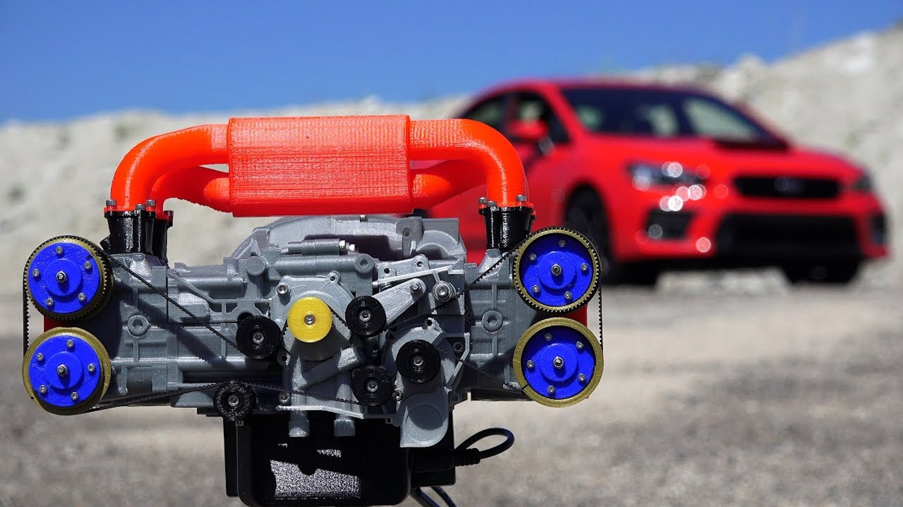
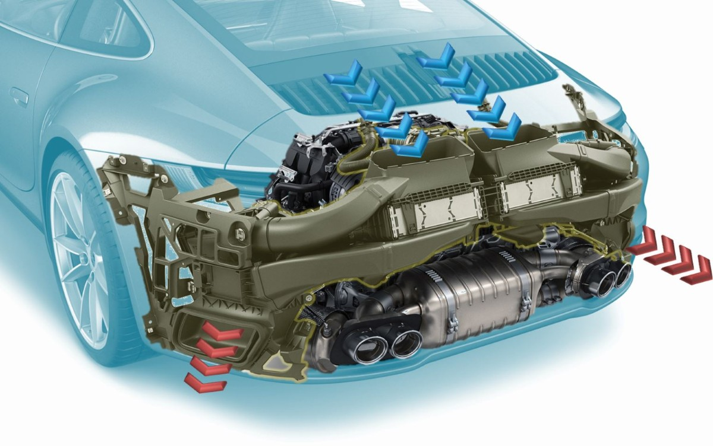

Subaru WRX: El Equilibrio Simétrico
El motor Subaru Boxer de 4 cilindros es un motor de combustión interna horizontalmente opuesto, famoso por su bajo centro de gravedad, equilibrio superior y suavidad. Su configuración, donde los pistones se mueven horizontalmente enfrentados (como boxeadores), reduce vibraciones y mejora la estabilidad del vehículo.

El núcleo de la ingeniería de Subaru, optimizado para la estabilidad.
Porsche 911: El Corazón Icónico
El motor bóxer de 6 cilindros de Porsche es el corazón icónico del Porsche 911, caracterizado por sus cilindros opuestos horizontalmente. Esta configuración, a menudo refrigerada por agua en modelos modernos y biturbo, define el rendimiento deportivo de la marca con alta potencia y respuesta rápida.
Porsche Boxster: Rendimiento Compacto
Los motores bóxer de 4 cilindros de Porsche son propulsores compactos y turboalimentados utilizados principalmente en la serie 718 Boxster y Cayman. Destacan por su gran potencia, con versiones de 2.0L (300 hp) y 2.5L (350 hp). Históricamente, el 550 Spyder de 1952 fue el pionero con un diseño de motor Fuhrmann de alto rendimiento.

Motor de cilindros opuestos: el secreto del manejo superior de Porsche.